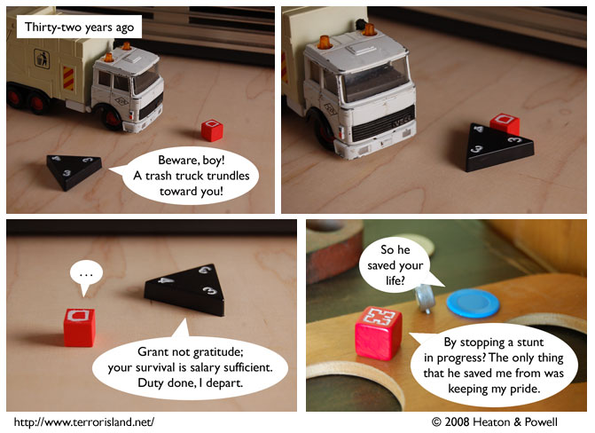

Strip #266
— Friday, February 22, 2008
Garbage trucks used to be very dangerous.
Notes, Thoughts, &c.
Ben’s Notes
I hope you like hearing about Gunpowder’s past, because now that I have a separate piece to represent him as a child, his backstory is going to be figuring in the comic a lot more.
Lewis’s Notes
It’s funny, stunned silence sounded exactly the same in the past. Who’d have thunk it?